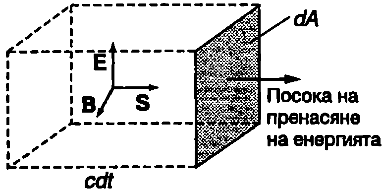

Плътност на енергията
Обемната плътност $w$ на енергията на електромагнитното поле във вакуум е равна на сумата от обемната плътност на енергията на електричното поле $\displaystyle w_E = \frac{\varepsilon_0 E^2}{2}$ (вж. \ref{sec:49}) и обемната плътност на енергията на магнитното поле $\displaystyle w_B = \frac{B^2}{2\mu_0}$ (вж. 567): $$w = w_E + w_B = \frac{\varepsilon_0 E^2}{2} + \frac{B^2}{2\mu_0}. $$
В електромагнитната вълна интензитетът на електричното поле $E$ и индукцията на магнитното поле $B$ се изменят с течение на времето, поради което уравнение \eqref{eq:85.1} изразява моментната стойност на плътността на енергията. Като се отчете, че за ЕМ вълна моментните стойности на $E$ и $B$ са свързани със съотношението $B = E/c$ и се вземе предвид уравнение \eqref{eq:84.1} $\displaystyle c = \frac{1}{\sqrt{\varepsilon_0 \mu_0}}$ за скоростта $c$ на ЕМ вълни във вакуум, формулата за плътността на енергията на магнитното поле на вълната може да се запише във вида $$w_B = \frac{B^2}{2\mu_0}= \frac{1}{2\mu_0} \left(\frac{E}{c}\right)^2 = \frac{\varepsilon_0\mu_0}{2\mu_0} E^2 = \frac{\varepsilon_0 E^2}{2}.$$
Следователно за електромагнитните вълни обемната плътност на магнитната енергия е равна на обемната плътност на електричната енергия: $W_B = W_E$ Тогава $$w = w_E + w_B = 2w_E = \varepsilon_0 E^2. $$ Интензитетът на електричното поле $E$ на линейно поляризирана в направление на оста $y$ плоска монохроматична вълна, която се разпространява по оста $x$ на правоъгълна координатна система, се изменя по синусовия закон $E_y = E_{0y} \sin(\omega t - kx)$
Средната стойност на плътността на енергията за такава вълна е $$\begin{aligned} &\overline w = \varepsilon_0 \overline {E^2} = \ &= \varepsilon_0 E_{0y}^2 \overline {\sin^2 (\omega t - kx)} = \frac{1}{2} \varepsilon_0 E_{0y}^2. \end{aligned} $$ Вектор на Пойнтинг
На Фиг. \ref{fig:85.1} е показан малък елемент от плоска повърхност с площ $dA$, разположен перпендикулярно на посоката на разпространение на плоска монохроматична електромагнитна вълна. За интервал от време $dt$ вълната пренася през повърхността на елемента енергия $dW$, равна на енергията на електромагнитното поле в паралелепипед с обем $(cdt) dA$: $$\begin{aligned} &dW = wcdtdA = \varepsilon_0 EcdtdA=\ &= \varepsilon_0EB c^2 dtdA= \frac{1}{\mu_0} EBdtdA, \end{aligned} $$
където е отчетено, че $E = cB$ и $\displaystyle c^2 = \frac{1}{\varepsilon_0\mu_0} $.
Плътността на потока на енергията, т.е. енергията, преминала за единица време през единица площ, разположена перпендикулярно на посоката на разпространение на бягащата ЕМ вълна, е $$S= \frac{dW}{dAdt} = \frac{1}{\mu_0} EB. $$ Уравнение \eqref{eq:85.5} се записва във векторна форма $$\vec S= \frac{1}{\mu_0} \vec E \times \vec B. $$ където величината $\vec S$ се нарича вектор на Пойнтинг в чест на английския физик Джон Пойнтинг (1852-1914). Модулът на вектора на Пойнтинг е равен на плътността на потока на енергията, а посоката му

`Фиг. 85.1`
съвпада с посоката на разпространение на ЕМ вълна, т.е. с посоката, в която се пренася енергията (Фиг. \ref{fig:85.1}).
Интензитет на ЕМ вълни
Средната стойност на плътността на потока на енергията $\overline S$ се нарича интензитет $I$ на електромагнитната вълка. От уравнение \eqref{eq:85.5} и формулата $B = E/c$ за интензитета $I$ се получава $$I = \overline S = \varepsilon_0 c \overline{E^2}. $$ Интензитетът на ЕМ вълна е равен на осреднената по времето енергия (средна енергия), която вълната пренася за единица време през единица площ, разположена перпендикулярно на посоката на разпространение.
Интензитетът на плоска, линейно поляризирана в направление на оста $y$ монохроматична вълна, която се разпространява по оста $x$ на правоъгълна координатна система, е $$I = \varepsilon_0 c E_{0y}^2 \overline{\sin^2(\omega t - kx)} = \frac{1}{2}\varepsilon_0 c E_{0y}^2. $$ Вълна с произволна поляризация се представя като суперпозиция на две линейно поляризирани в направление на осите $y$ и $z$ вълни с интензитети $I_y$ и $I_z$. Общият интензитет е $$I = I_{0y} + I_{0z} = \frac{1}{2}\varepsilon_0 c(E_{0y}^2 + E_{0z}^2). $$ Това уравнение може да се използва и за неполяризирана монохроматична вълна. Такава вълна формално се разглежда като суперпозиция от две линейно поляризирани във взаимно перпендикулярни направления вълни с еднакъв интензитет, т.е. с еднакви амплитуди на електричните им полета: $\displaystyle E_{0y} = E_{0x} = \frac{E_0}{\sqrt2}$, където $E_0$ е максималната стойност на интензитета на електричното поле на неполяризираната ЕМ вълна. От уравнение \eqref{eq:85.9} за интензитета на неполяризираната ЕМ вълна се получава $$I = \frac{1}{2}\varepsilon_0 c E_0^2. $$ Ще отбележим, че в оптиката под интензитет на светлинните вълни обикновено се разбира величина, която е пропорционална на квадрата на амплитудата $E_0$ на вектора на интензитета на електричното поле на вълната ($I\propto E_0^2$), без да се пресмята коефициентът на пропорционалност.
Пример 85.1
Интензитетът на слънчевата радиация в горните слоеве на атмосферата на Земята е $l = 1400~\mathrm{W/m^2}$ Оценете амплитудите $E_0$ и $B_0$ на електромагнитното поле. \end{psexample}
Решение
Слънцето излъчва електромагнитни вълни с различни честоти и амплитуди, които не са поляризирани. Пълният интензитет е равен на сумата от интензитетите на отделните монохроматични вълни. За оценка ще използваме прост модел, съгласно с който слънчевата радиация представлява плоска монохроматична вълна с амплитуда на интензитета на електричното поле $E_0$. Тогава от уравнение \eqref{eq:85.10} получаваме
$$E= \sqrt{\frac{2I}{\varepsilon_0 c}} = \sqrt{\frac{2(1400~\mathrm{W/m})}{(8.85.10^{-12}\mathrm{F/m})(3.10^8\mathrm{m/s})}} = 1030~\mathrm{\frac{V}{m}};$$
$$B_0 = \frac{E_0}{C} = 3,!4.10^{- 6} T.$$
Ще обърнем внимание, че числените стойности на двете амплитуди силно се различават, но тъй като те се измерват в различни единици, не е коректно да бъдат сравнявани. Може да се сравнява например енергията, която се измерва в едни и същи единици: за електромагнитните вълни плътността на енергията на електричното поле е равна на плътността на енергията на магнитното поле.
Задачи
- а) Покажете, че във вакуум интензитетът на бягаща плоска електромагнитна вълна с амплитуда на магнитната индукция $B_0$ се изразява с формулата $\displaystyle I = \frac{c B_0^2}{2\mu_0}$
б) Пресметнете интензитета $I$ на плоска бягаща вълна с амплитуда на магнитната индукция $B_0 = 2.10^{- 4} ~\mathrm{T}$
- Покажете, че векторът на Пойнтинг \eqref{eq:85.6} се изразява с формулата $\vec S = \vec E \times \vec H$, където $\vec H$ е интензитетът на магнитното поле на ЕМ вълна.